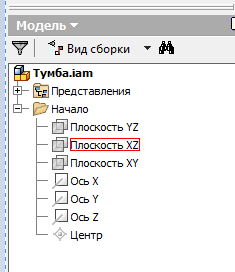
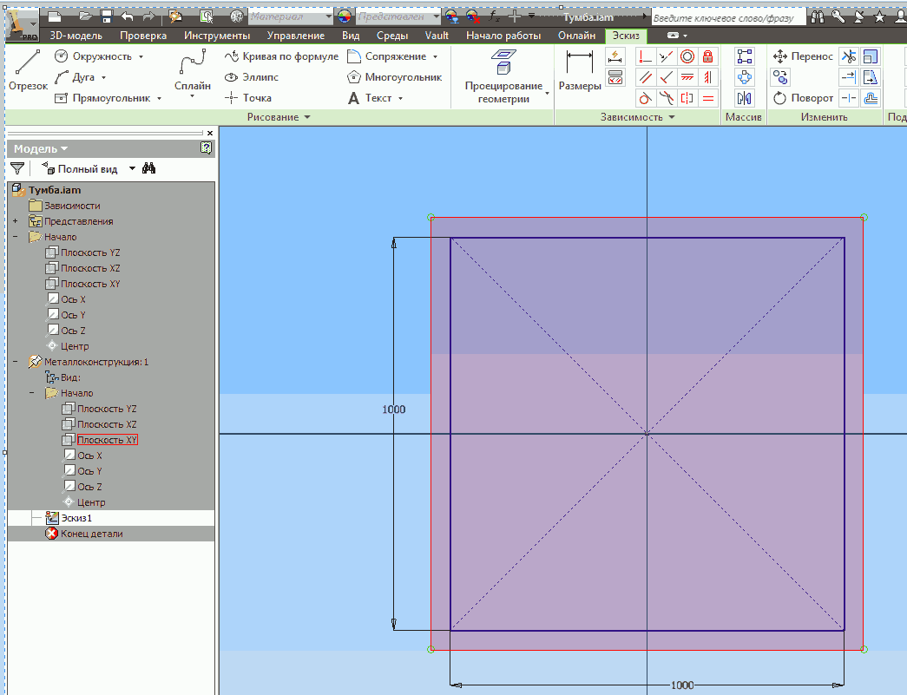
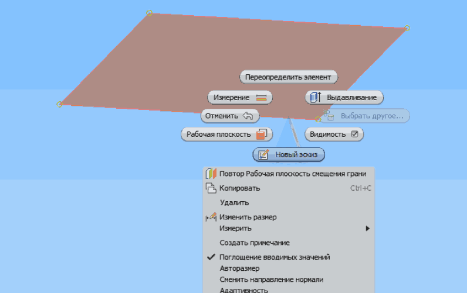
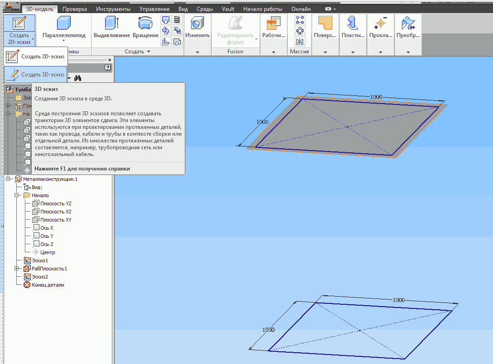
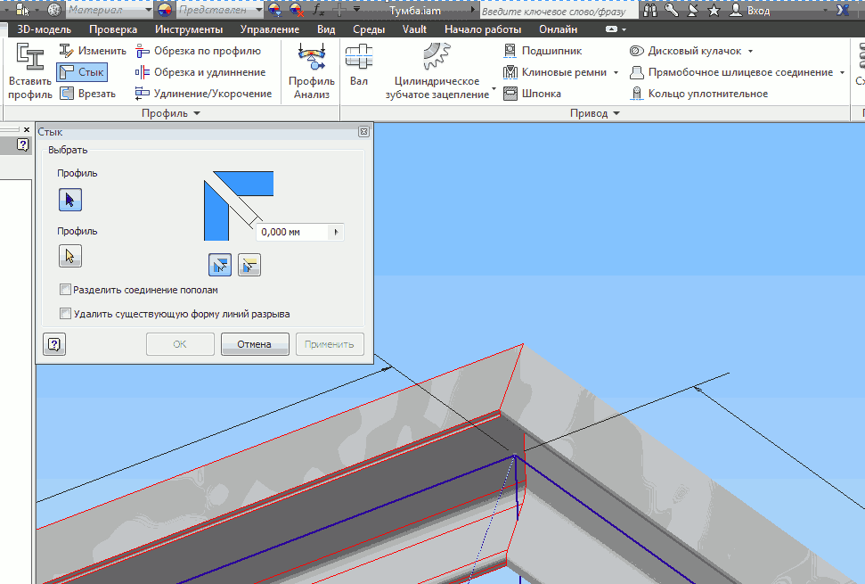
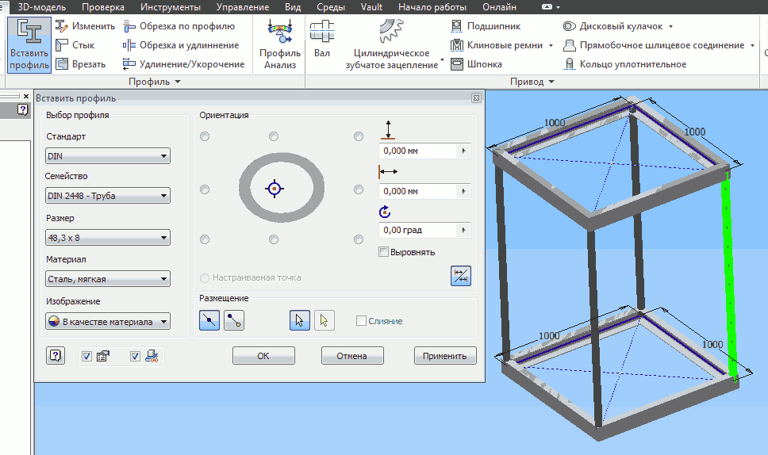

Создадим компонент, назовём его например Металлоконструкция;
На запрос Укажите плоскость для создания компонента укажем в дереве модели плоскость XZ — Вид сверху

Выберем Создать 2D - экиз, в качестве плоскости для создания — Вид сверху;
начертим прямоугольник По центру и двум точкам;
укажем размеры прямоугольника 1000 х 1000 и завершим эскиз.

Создадим плоскоть, параллельную плоскости построения эскиза со смещением 1500мм:
зайдём в Рабочие плоскости;
выберем в раскрывающемся меню Плоскость — Смещение относительно плоскости.
Выберем исходную плоскость, укажем расстояние смещения и щёлкнем по галочке.
Создадим эскиз на соданной плоскости (щелчок ПКМ по ней и выбрать
Новый эскиз.

Построим эскиз, аналогичный предыдущему и завершим его;
Зайдём в создание эскизов и выберем Создать 3D - эскиз.

Зайдем в команду Отрезок, соединим между собой все вершины прямоугольников и завершим 3D - эскиз.
(ПКМ и выбрать Принять 3D - эскиз.)
Затем опять ПКМ и выбрать Закончить редактирование.
Запустим Генератор рам:
зайдём в пункт меню Проектирование;
выберем Вставить профиль;
в открывшемся окне выберем DIN — Швеллер — U100 — Сталь углеродистая;
справа в окне можно настроить ориентацию профиля (оставим пока по умолчанию).
Выберем отрезок эскиза — на нём появится контур швеллера. Если
нас не устраивает его ориентация, можно её изменить и нажать Применить, а затем ОК
в окне для параметров сохранения профиля (при желании можно дать ему новое имя).
Добавим аналогично швеллер ко всем отрезкам верхнего и нижнего основания.
Зайдём в команду Стык, выберем поочерёдно два профиля и нажмём
Применить. Произойдёт обрезка профиля по линии стыка. Выполним это действие для всех стыков.

Опять запустим Генератор рам:
команда Вставить профиль;
в открывшемся окне выберем DIN — Труба — 48,3 х 8 — Сталь углеродистая;
добавим профиль к вертикальным отрезкам (по аналогии со швеллерами).

Выполним обрезку выступающих частей труб.
Команда Обрезка и удлинение;
Выберем сначала все трубы, а затем, переключив выбор на грани выберем грань, до которой надо обрезать трубы и нажмём Применить.
Повторим эту операцию с нижними участками труб.
Погасим видимость эскизовВ итоге получим модель нашей металлоконструкции.